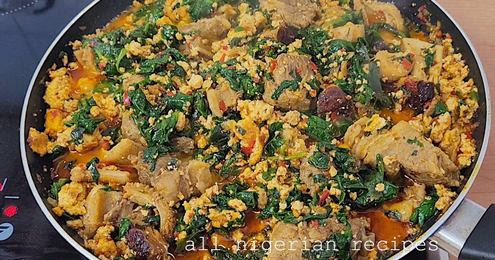

A popular Nigerian dish made with blended lemon seeds that can be eaten with cassava flour or even boiled white rice, Shared with family and friends.
Ingredients
- 2 cups ground egusi
- 500g (1.1 lbs) beef
- 1 cup cow tripe
- 1 dry catfish
- 1 piece stockfish
- 2 cooking spoons red palm oil
- 2 sweet peppers
- Habanero pepper (to your taste)
- ¼ onion (chopped) for frying
- ½ onion (blended) for seasoning the meat
- 1 onion (blended) for mixing with egusi
- 1 big seasoning cube (beef flavour)
- 2 tablespoons ground crayfish
- Leafy vegetables:
- uziza and ugu or
- uziza and spinach or
- ugu or
- spinach
Preparetion
- Soak the dry fish in cool water to soften.
- Grind the egusi seeds with a spice grinder.
- Grind the crayfish.
- Clean all the vegetables: peppers (deseed the sweet peppers), onions, leafy vegetables.
- Blend the onions with the chopper till smooth,Chop one quarter onion with a knife.
- Chop the peppers with the chopper
- By now, the dry fish should be soft enough for cleaning and deboning. Clean with a brush, break into pieces and debone.
- Clean the stockfish with water
- Clean the beef and cow tripe.
Steps
- Place the beef in a clean pot. Add the seasoning cube and chopped onion (half a bulb).
- Let it steam while stiring at all time till all the beef turns pale.
- Add the stockfish and cow tripe. Pour water to cover everything and start cooking.
- Place the ground egusi in a bowl. Add the second batch of blended onion (one bulb) and mix till everything is well combined.
- Make small balls of the eegusi mix and set aside.
- The the meats and stockfish are done, take out the stockfish, debone and break into pieces.
- Separate the meat from the stock/broth and set aside.
- Add the red palm oil into a clean dry pot/pan.
- When it heats up, add the onion we chopped with a knife. Fry till transluscent.
- Add some of the chopped pepper and fry for about 2 minutes.
- Then gently add the molded egusi balls one by one such that they are not overcrowded.
- Cover and let it fry a bit. Then flip them to fry the underside.
- After some time, the egusi balls would be caked. Use you spatula to crush them to your liking.
- When happy with the size, add the crayfish, some of the stock/broth. Cover and leave it to simmer for about 10 minutes, topping up the liquid with the stock/broth from time to time.
- When the egusi soup is well cooked and savoury (you will know from the taste and aroma), add the soaked and deboned catfish, the cooked beef, cowtripe and stockfish.
- Add the remaining chopped peppers. Cover and let it simmer for a bit.
- Add the vegetables and salt if necessary. Cover and once it heats up again.
- Stir to mix everything very well.
It's Done
You can transfer to a cool container immediately so the vegetables will remain green and appetizing.